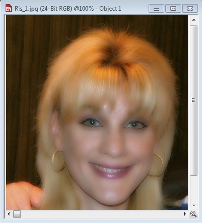
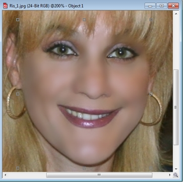

Skin Smoothing
Инга / 30.09.2012, 02:12/00:41
Форум:
Версия программы:
16.1.0.843 (sp1)
Давно в своей повседневной практике для коррекции кожи использую этот урок: Skin Smoothing Хорошо получается.
Мне только не понятно зачем автор создает два Objects в самом начале. Все также успешно работает если создать только один Object (Ctrl D).
Ну, зачем два объекта, это понятно: затем, чтобы исходное изображение оставалось нетронутым, чтобы было с чем сравнить результат.
Но вот, что действительно непонятно, так это: зачем повышение резкости; зачем инверсия; зачем режим смешивания Перекрытие. И ещё непонятно, что там у Инги успешно работает.
Ещё непонятно, почему размытие применяется ко всему лицу (пусть даже с учётом маскирования глаз и волос), а не к отдельным областям. Непонятно, почему степень размытия 1 пикс., это всегда будет зависеть от размеров изображения.
По-моему, способ — полная фигня.
Согласен с Solowejka! А применение размытия ко всему лицу и дальше Overlay - это еще старинный рецепт для придания коже гладкости, но больше подходит не для обычных фото, а для создания эффекта "бронзовой кожи", как можно часто увидеть, например, на "обоях рабочего стола". Там фотомодели с "бронзовым загаром", гладкой кожей... ну, в-общем в природе такого не бывает :):)
Я делаю с одним Object. При этом у меня есть и результат, и нетронутое изображение. Есть Object и есть Backgraund и этого достаточно для переключения между оригиналом и результатом. Видимо вы, просто просмотрели урок, а не пытались его воспроизвести.
Используя последовательность шагов, ориентируясь на само изображение, подбирая параметры в каждом конкертном случае – получается хорошая кожа. Думала не надо такие очевидные вещи расписывать в своем посте... Ясное дело – урок демонстрирует просто общий подход.
Понятное дело можно применить и к области. Это очевидно. Просто важна для меня последовательность шагов в уроке.
Т.е. глядя на оригинал в уроке и на результат вам не нравиться разница? Странно, а заказчики вот довольны. :)
P.S.
Вот есть готовая фотография в уроке. Может кто-нибудь продемонстрирует более интересное решение для восстановления кожи в этом конкретном случае, чтобы иметь под рукой более продвинутую обобщенную методику?
Инга, Вас не поймёшь: вы продвигаете способ, которым Ваши заказчики довольны или хотите более продвинутую методику?
У меня получился такой же результат (из фото данного урока) за 5 сек. Обработка Touch-up Brush и другой режим наложения. Но дело не в том... и не в более "продвинутой методике" или еще в чем-то. (В данном уроке исходник еще хороший. А вот когда качество оригинала хромает на обе ноги...) А в целом можно сказать, что любая метода хороша, если в результате получаете от нее то, что вам надо. И не важно, что кто скажет. Если Вас устраивает методика и результат, используйте ее. Ведь один и тот же результат часто можно получить разными способами. В том и вся прелесть, что можно выбрать способ себе по душе и "чихать на все остальное".
Мой вопрос был в первом посте о кол-ве Object. Я думала, что упускаю что-то важное.
Было бы прекрасно поучиться у гуру и получить результат более простым способом, возможно более правильным и легким, а не держать в голове пункты шагов.
Если не тяжело, продублируйте по шагам как урок и выложите результат.
Инга! Объект должен быть один. В том уроке - второй объект лишний. Методика остается примерно той же, меняются лишь вариации. Я имел ввиду совсем другое, когда говорил о "старинном способе". Как будет возможность, я напишу "тему с вариациями" и вы поймете, что ваш метод не такой плохой, как Вы подумали из ответов :)
Спасибо за разъяснения.
Спасибо, буду ждать. Хочется иметь под рукой более широкий круг подходов.
Вариации на тему «Разглаживание кожи».
Здесь я расскажу о быстрых методах разглаживания кожи, которые используют тот же принцип, что и в первом посте темы. Данные методики не новы и не придуманы мной.
Здесь мы рассмотрим три способа разглаживания кожи. Их конечно намного больше, но мы рассмотрим самые простые.
Как это часто у меня случается, как надо что-то написать, так нет подходящего материала, поэтому воспользуюсь фотографией жены своего друга (он врядли когда-либо об этом узнает, т. к. живет за океаном). Думаю он меня не пристрелит за это :). Я предварительно обрезал фото, т. к. оно большое и «отрезанная часть» будет только лишней.
На рис. 1 представлено исходное фото (после обрезки).
Далее, по ходу урока я буду использовать конечно уменьшенные копии (хотя на рис. 1, итак только 60 % от исходной оставшейся части после обрезки). Итак, приступим.
Вариант 1.
Чтобы было понятней, когда этот вариант может быть с успехом использован, скажу, что на полном варианте этого фото, женщина сидит со своим мужем и естественно выглядит не крупным планом, как на рис. 1. Другими словами, этот метод достаточно хорошо использовать, когда «предмет улучшения» сфотографирован с некоторого расстояния, а не крупным планом.
1. Сделаем дубликат фона, нажав комбинацию клавиш Ctrl + D.
2. Этот шаг «прикидочный». Выполните команду Effects > Blur > Gaussian Blur (Эффекты > Размытость > Размытость по Гауссу). В окне фильтра установите значение Radius (Радиус) таким, чтобы исчезла разница в оттенках на коже (рис. 2).
Определившись с значением Radius (Радиус), щелкните Cancel (Отмена), т. к. это значение будет для нас, как справочная величина.
3. Выполните команду Effects > Sharpen > High Pass (Эффекты > Повышение резкости > Удаление мелких деталей) и задайте значение Radius (Радиус) такое же, как и в фильтре Gaussian Blur (Размытость по Гауссу) (рис. 3).
4. Выполните команду Effects > Blur > Gaussian Blur (Эффекты > Размытость > Размытость по Гауссу) и установите значение Radius (Радиус) в 3 раза меньшее, чем в фильтре High Pass (Удаление мелких деталей), в данном случае 2,0.
5. Убедитесь, что у вас выделен в докере Objects (Объекты) объект-дубликат фона. Выполните команду Image > Transform > Invert (Изображение > Преобразование > Инвертировать).
6. В докере Objects (Объекты) измените режим наложения на Hard Light (рис. 4).
Сравните рис. 4 и рис. 1. Несмотря на значительное уменьшение, видно, что кожа разгладилась, но при этом текстура кожи изменилась не «катастрофически».
7. Можно немного восстановить резкость и первоначальную текстуру кожи, изменив прозрачность в докере Objects (Объекты). У меня получилось значение Opacity (Непрозрачность) = 80 % (рис. 5).
На скриншоте не очень хорошо видна разница между рис. 4 и 5. Но на самом деле прежде всего разница была заметна в резкости глаз. Текстура кожи немного вернулась к исходной.
На данном этапе вы можете выбрать дальнейшую участь фотографии. Общая резкость фото была достаточно хорошей и я бы на свой вкус пожертвовал резкостью в волосах, глазах и ресницах (ради экономии времени). Но это дело вкуса и желания. Эти «моменты» можно менять путем изменения прозрачности, а также при необходимости создав маску обрезки и обработав кистью места, четкость которых надо восстановить.
Вариант 2.
В этом варианте используем то же фото, т. е. на рис. 1.
1. Сделаем дубликат фона, нажав комбинацию клавиш Ctrl + D.
2. В докере Objects (Объекты) меняем режим наложения на Overlay. (рис. 6).
3. Выполните команду Image > Transform > Invert (Изображение > Преобразование > Инвертировать) (рис. 7).
4. Выполните команду Effects > Sharpen > High Pass (Эффекты > Повышение резкости > Удаление мелких деталей) и задайте значение Radius (Радиус) равным 10 (рис. 8).
В результате изображение получится размытым, в отличие от предполагаемых результатов (рис. 9)

5. Выполните команду Effects > Blur > Gaussian Blur (Эффекты > Размытость > Размытость по Гауссу). В этой ситуации фильтр Gaussian Blur (Размытость по Гауссу) работает в «обратном направлении». Увеличение значение Radius (Радиус) приводит не к размыванию, а к увеличению резкости. Значения лучше устанавливать не более 4. Тут можно устанавливать значение Radius (Радиус) интерактивно, т. е. наблюдая изменения в окне изображения и остановится на том значении, которое вас устроит. Я остановился на значении Radius (Радиус) = 2,0. Результат показан на рис. 10.
Как и в предыдущем случае, необходимость восстановления резкости на волосах, глазах и т. д., требует создания маски обрезки и обработки кистью. Но в данном примере, я не буду описывать эти шаги, т. к. думаю, это не вызовет у вас особых затруднений.
Вариант 3.
Это то, что я назвал старинным способом. С этим методом я познакомился еще бог знает сколько лет назад, когда я только начинал интересоваться работой с растровыми изображениями. Мне тогда он показался очень крутым. Но сейчас я с улыбкой об этом вспоминаю. Метод простой, «как 5 копеек», но позволяет часто помимо разглаживания убрать попутно кучу дефектов, как то шумы и прочее. Но в этом случае размытие приходится применять настолько сильное, что получается потом не лицо, а маска.
1. Опять возьмем за исходник фото на рис. 1. Создаем на лице маску. Оставляем невыделенными глаза, рот и ноздри. Я сделал грубую маску, потому как лень было возиться (рис. 11).
2. Создаем из маски объект, нажав Ctrl + стрелка вверх.
3. Выполните команду Effects > Blur > Gaussian Blur (Эффекты > Размытость > Размытость по Гауссу). Выбираем значение Radius (Радиус) = 4,0 (рис. 12).

4. В докере Objects (Объекты) меняем режим наложения на Overlay (рис. 13).
Вот и всё. Т. е. этот способ самый быстрый, но и самый грубоватый. Если остановиться на шаге 3, например, или увеличить размытие, то кожа будет не то что гладкая…. а глаже не бывает :) :).
Большое спасибо!